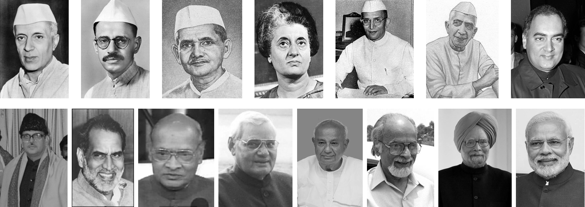

Every Year, we celebrate August 15 as our Independence Day and eagerly wait for the Prime Minister’s speech and then there happens discussion ranging from news hour debates to intelluctal neighbourhood talks!
All these speeches have been disected and analysed separately, but not ever put side by side to measure our progress as a nation.
India will be celebrating 75 Years of Independence in 2022, this data visualization will be an attempt to look at India’s journey in these years from the ‘ramparts of Red Fort’.

In all the years since Independence, we have seen 15 Different Prime Ministers. In their tenures, and 9 of them have delivered multiple Independence Day speeches; 4 of them delivered one and two none.
Knowing this, we start with the part which is latest and we are more familiar with. The two heavily compared Prime Ministers of India; Manmohan Singh and Narendra Modi.
We performed sentiment analysis and then in 21st century made a list of 21 topics and checked how they stood against each other in the speeches.
Assumption: It is assumed that topic with a higher word count was more important than the topic with a lower word count. The length at which a particular topic was talked about is ignored for a while.
Following are the 20 topics that have been talked about from the Red Fort, hover over them to see how they fared as years passed. We have also tried to incorporate incidences/news articles about what was happening when there is a sudden rise or fall in the ranking of a particular topic.